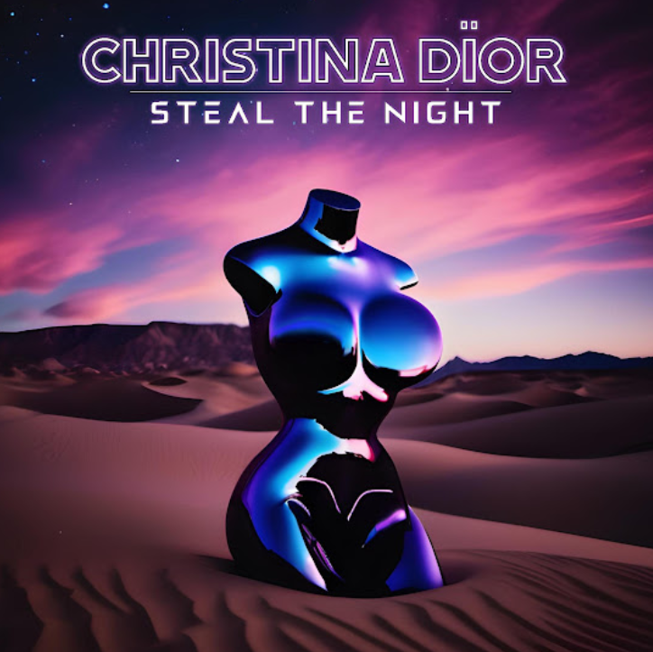
2024-07-04
Christina Dïor
Commercial releases and original recording projects from the Christina Dïor music catalogue.
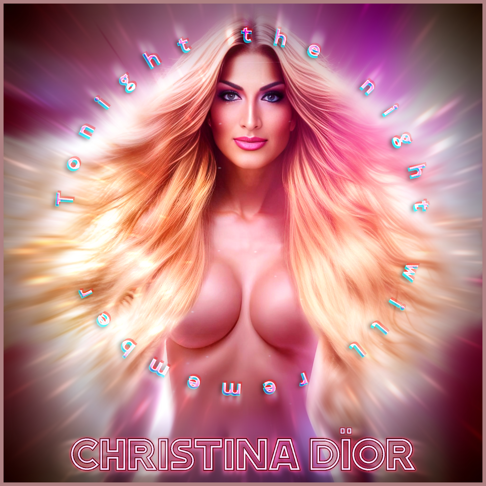
Developing / archive project
A developing collection centred on individuality, nightlife, self-expression and the kind of joyful, unapologetic energy that has always run through Christina’s stage work.
Commercial catalogue
Titles represented in the public streaming catalogue or supported by confirmed release records.

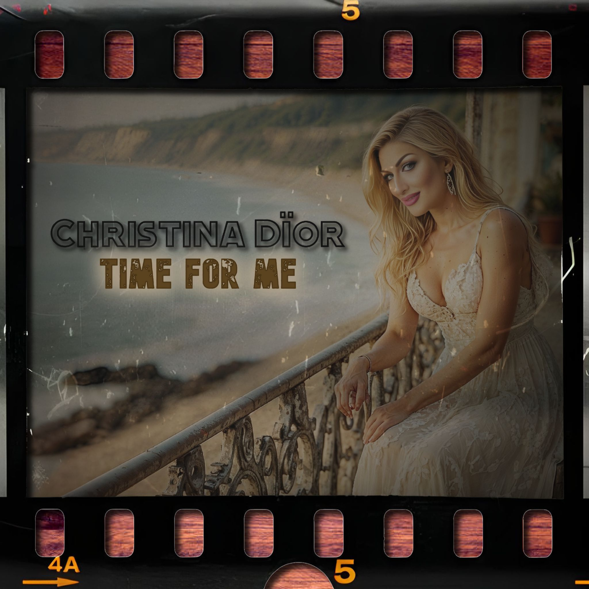
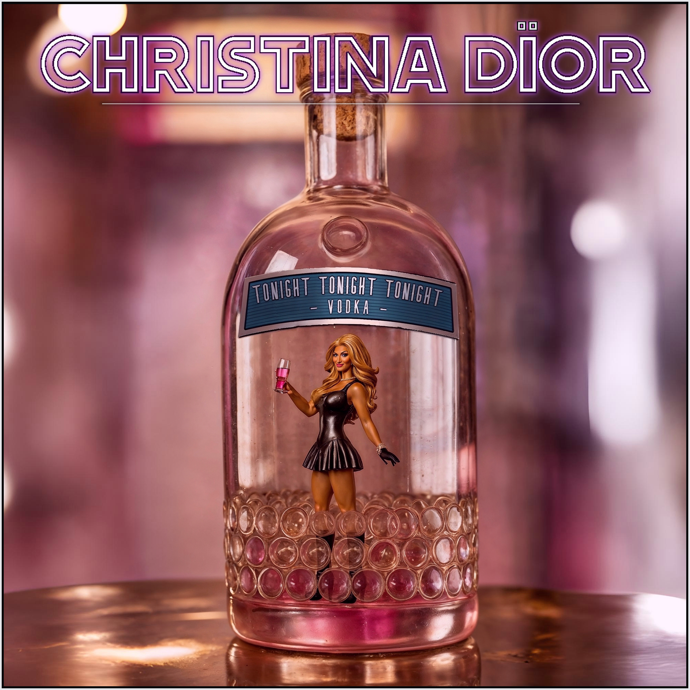
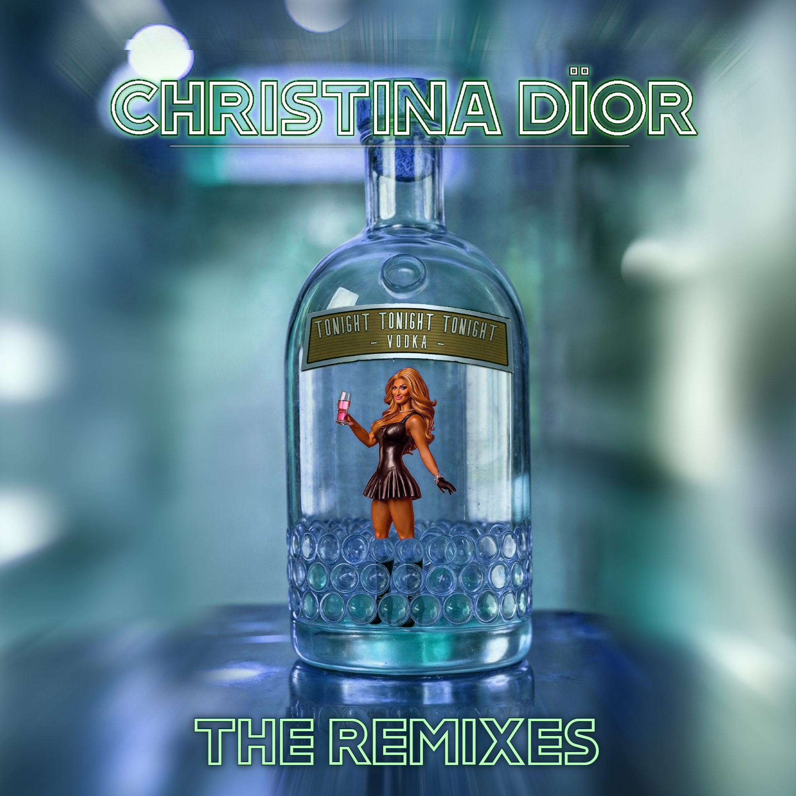
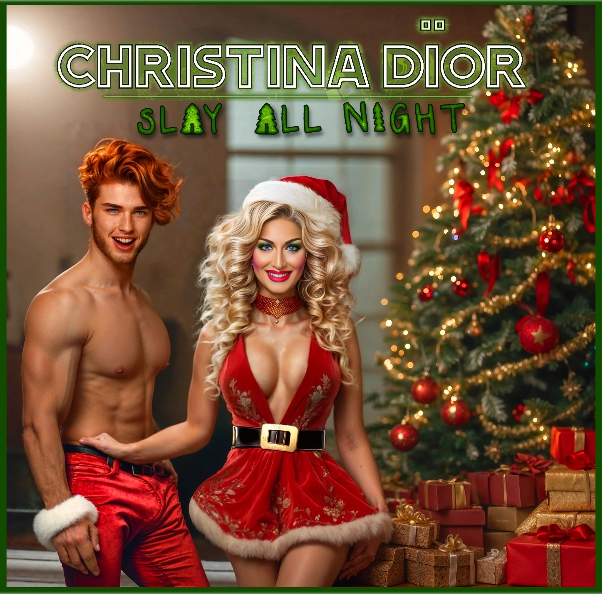
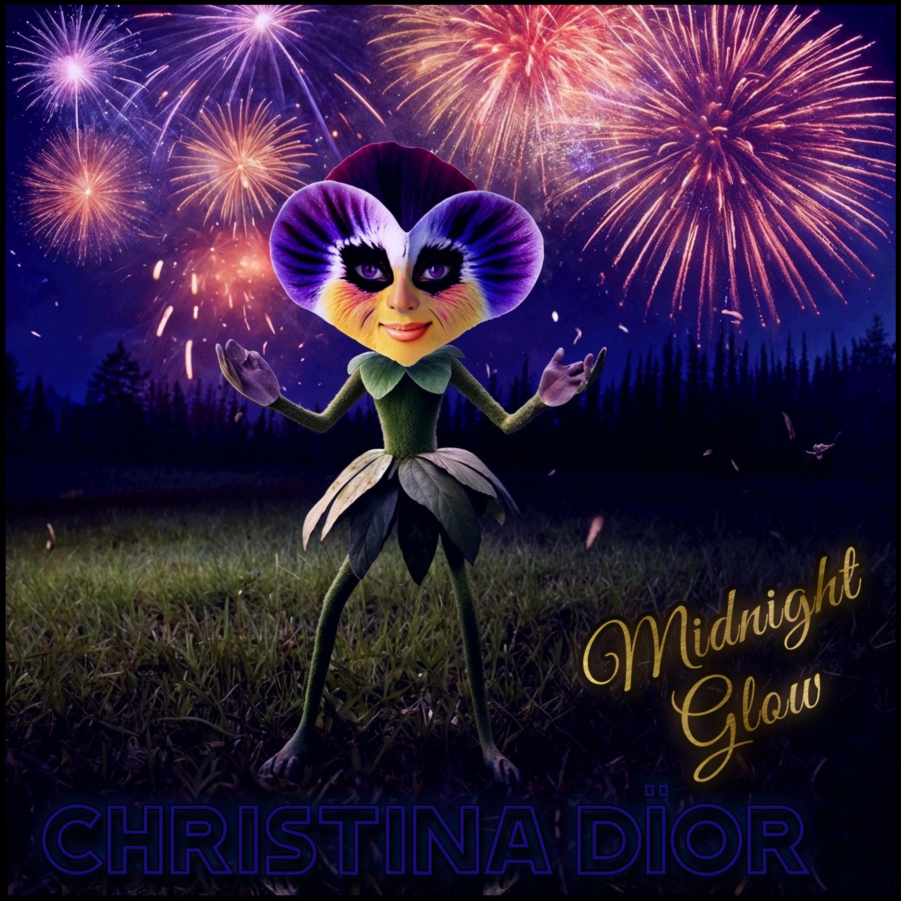
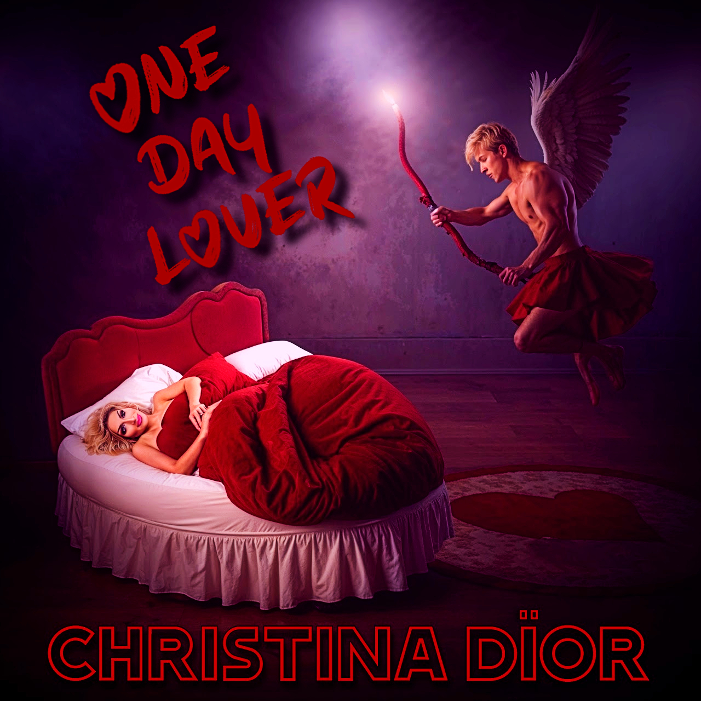
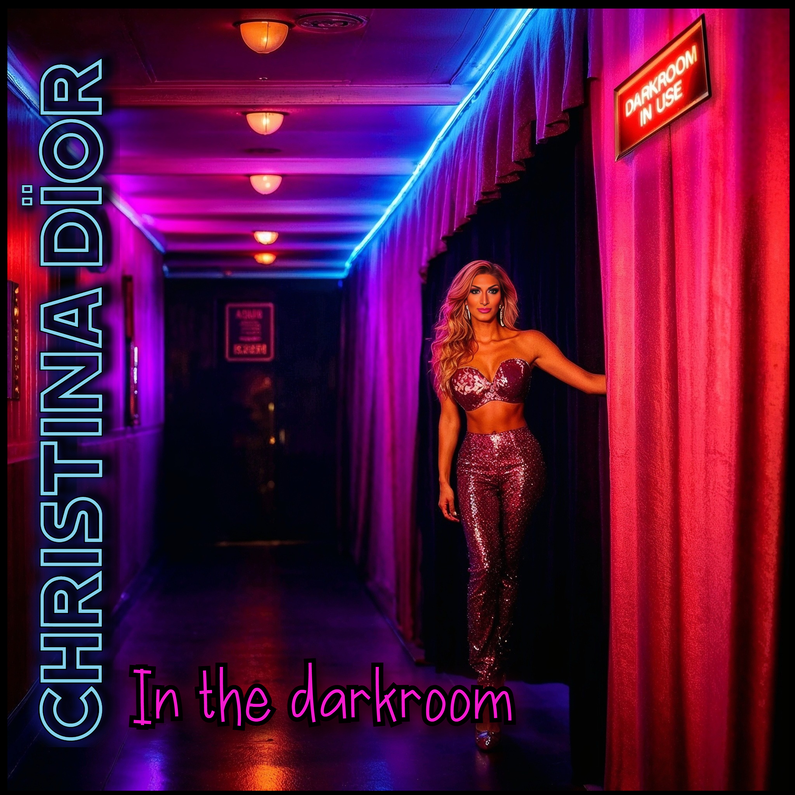
Production archive
Original Christina Dïor projects preserved in the production archive but not presented here as confirmed commercial releases.
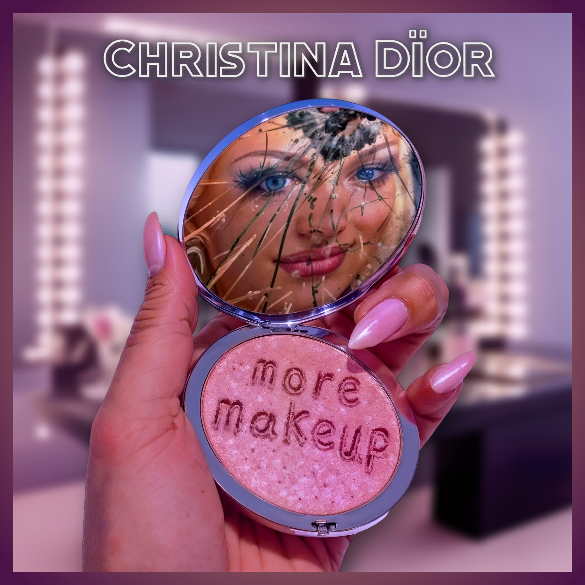
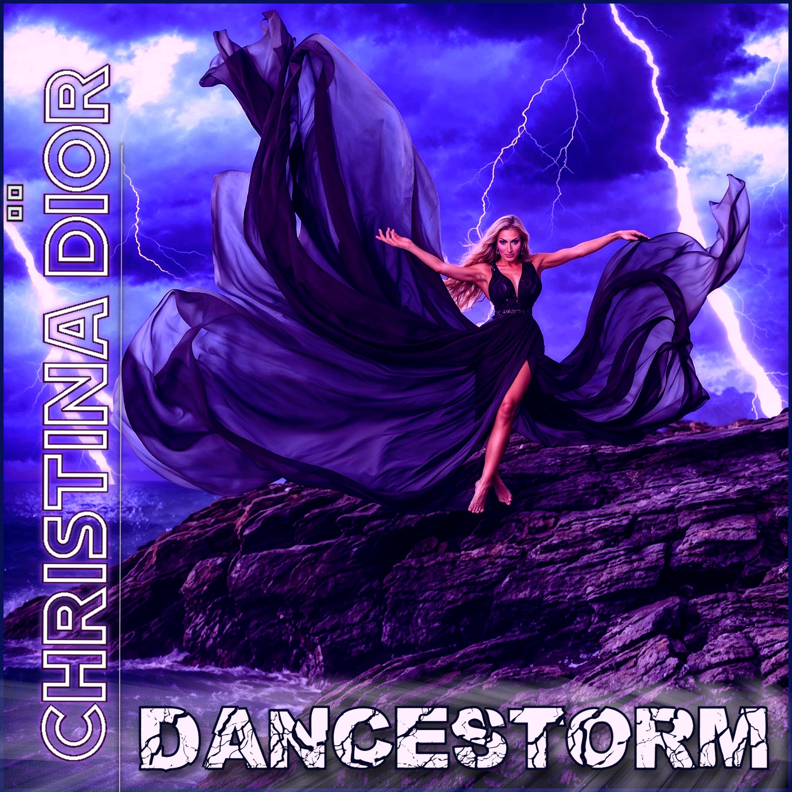